Recommender Systems¶
Data Scenarios¶
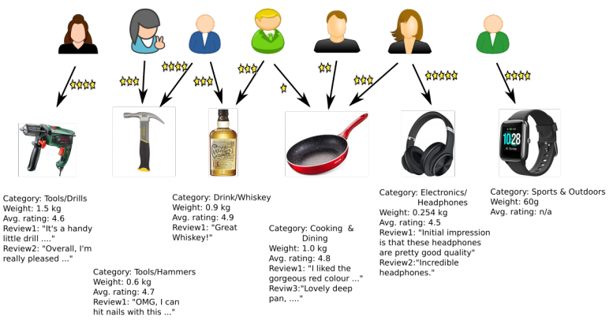
- Rich user data
- Rich item data
- Explicit rating data
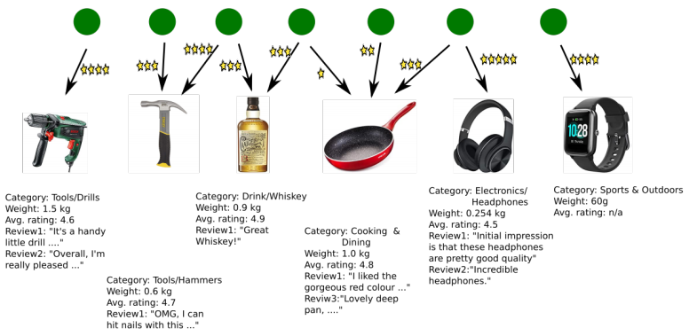
- Rich item data
- Explicit rating data
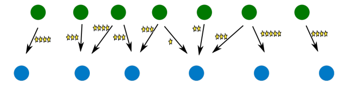
- Explicit rating data

Problem Dimensions¶
Problem Settings
- Users
- with/without features
- context information
- attributes
- metadata
- ...
- with/without features
- Items
- with/without features
- context information
- attributes
- metadata
- ...
- with/without features
- Interaction
- Explicit feedback (ratings)
- Implicit feedback (positive only)
Problem Statement
Given a user u, what new items i (not previously rated, bought, seen, ... by u) should be recommended to u, so that u is likely to interact (buy, view, rate, ...) with i
Challenges¶
Cold Start¶
- User cold start
- what to recommend to a new user, for whom there is no (feature, feedback) data?
- Item cold start
- to whom to recommend a new item that no one has bought before?
Serendipity¶
From Oxford English Dictionary:
The faculty of making happy and unexpected discoveries by accident. Also, the fact or an instance of such a discovery
Example Usage:
”Columbus and Cabot..(by the greatest serendipity of history) discovered America instead of reaching the Indies.”
It is hard for recommender systems to recommend something unexpected
Problem: Boring Recommendations¶
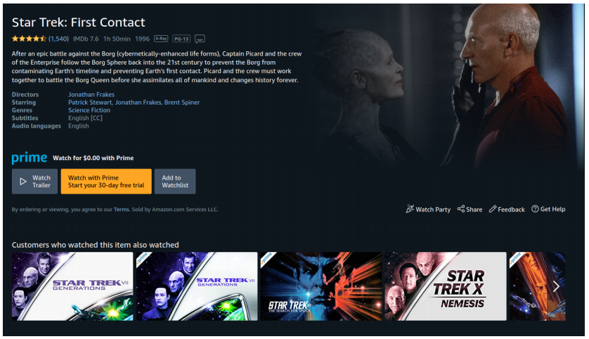
Problem: Information Filter Bubbles¶
Wikipedia:
A filter bubble [...] is a state of intellectual isolation that allegedly can result from personalized searches when a website algorithm selectively guesses what information a user would like to see based on information about the user, such as location, past click-behavior and search history. As a result, users become separated from information that disagrees with their viewpoints, effectively isolating them in their own cultural or ideological bubbles. . . .
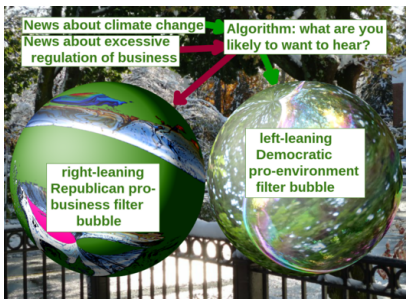
From https://en.wikipedia.org/wiki/Filter_bubble
Netflix Prize¶
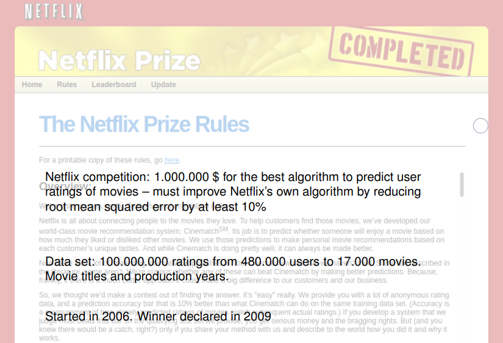
https://www.netflixprize.com/rules.html
- A big driver for research in recommender technology
Content-based Recommendation¶
We assume that we have some content
- Here on items
Item Content, Explicit Feedback¶
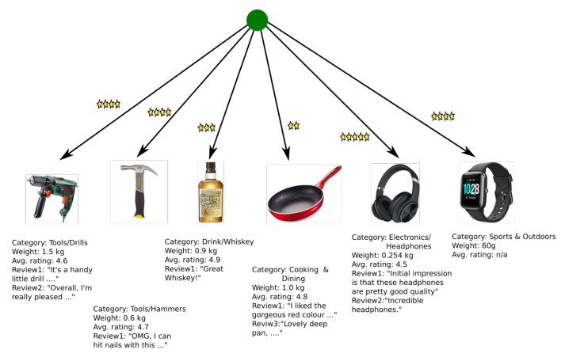
Scenario:
- Item features available
- No user features
- Explicit feedback
Note: picture only shows one user; there still are many users, but we treat them one at at time!
User Classifier¶
Items rated by user u described by feature vectors:
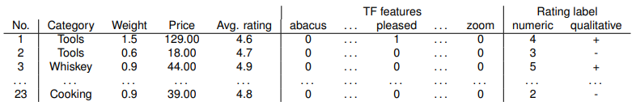
Recommendation: predict ratings of new items based on the item feature vector.
- Standard machine learning regression (numeric label) or classification (categorical label) task
- Can build standard prediction model (Naive Bayes, Decision tree, ...) for each user
Naive Bayes Classifier¶
Notation¶
- Assume qualitative rating labels: rating of user user u for item i: r_{u,i} \in \{+,-\}
- f_i denotes the feature vector of item i, and \bold f a particular value for this feature vector
In example from previous table:
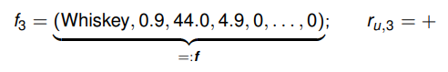
Bayesian Classification¶
Bayes Rule:
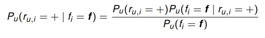
Same for P_u(r_{u,i}= - \mid f_i=\bold f)
Both conditional probabilities have the factor 1/P_u(f_i=\bold f) in common
- For classification can ignore this factor and can write:

(“=” in equation (4.6) in Ch.4 of Rec.Sys. Handbook should also be “\approx”)
Key Question
What is:
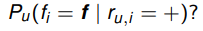
Naive Bayes assumption:
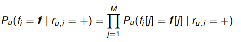
where M is the number of components in f_i
Example
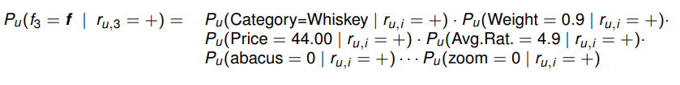
- Large number of term feature factors (= size of vocabulary) may dominate this product
- mitigated by: for most terms t: P_u(t=0 \mid r_{u,i}=+) and P_u(t=0 \mid r_{u,i}=-) will be very similar, and therefore have little impact on P_u(t=\bold f \mid r_{u,i}=+)/P_u(t= \bold f \mid r_{u,i}=-)
- May need to make some adjustments to handle "hybrid" item feature data as in this example
Still to determine
For a single term t what is:
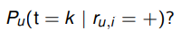
Bernouli model
- Use term occurrence features: k \in \{0,1\}
- P_u(\text{t}=1 \mid r_{u,i} = +): probability that term t occurs in the text (review) for an item i that u has rated positively
- = relative document frequency of term t in the "corpus" of items rated positively by u (cf. slide 3.9)
Multinomial model
- Use term frequency features (bag of words): k= F[i,t] \in \N
- P_u(t=k \mid r_{u,i} = +) = P_u(t \mid r_{u,i} = +)^k, where
- P_u(t \mid r_{u,i} = +) is the relative frequency of the term t in items rated positively by u.
- = relative collection frequency of term t in the "corpus" of items rated positively by u (cf. slide 3.9)
- P_u(t \mid r_{u,i} = +) is the relative frequency of the term t in items rated positively by u.
User Classifier Pros and Cons¶
Pros
- Makes use of item features
- Can handle item cold start (assuming features of new items known)
Cons
- Requires explicit feedback
- Does not handle user cold start
- ... or even users with relatively small data set
Item Content, Implicit Feedback¶
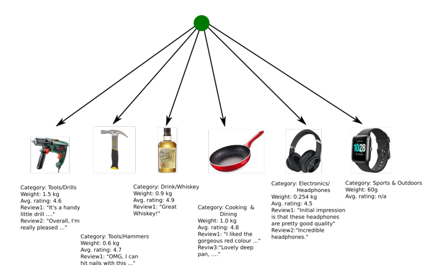
Scenario
- Item features available
- No user features
- Implicit feedback
A partial analogy to Information Retrieval (IR):
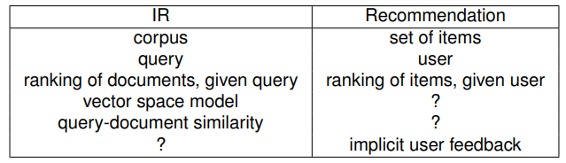
User Profile¶
Idea
Represent user by a vector in the same space as the item feature vectors by summarizing the feature vectors of items for which there is implicit feedback.
Example
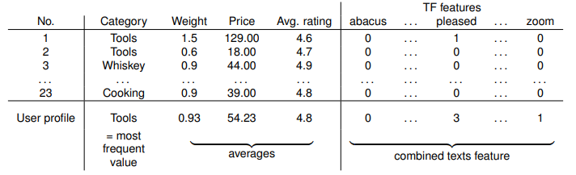
Then: rank candidate items according to similarity with user profile. Similarity can be defined as (weighted) sum of component-specific similarity measures:
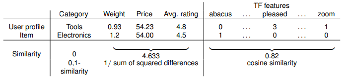
Illustration
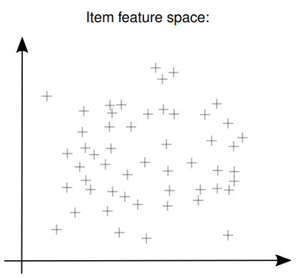
All items
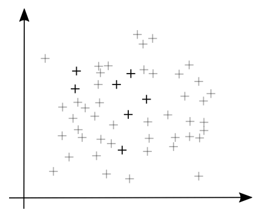
Items with implicit rating by user u
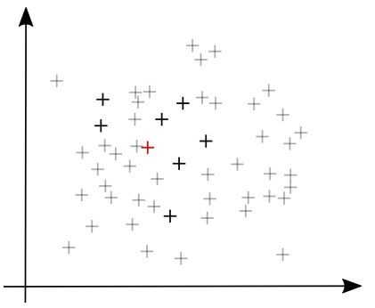
User profile of u (= item prototype)
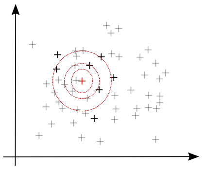
Ranking of new (gray) items for recommendation
Evaluation¶
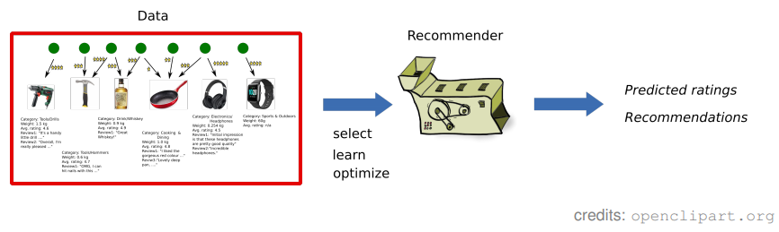
How good is the recommender we have designed?
Explicit Feedback¶
- Split data into training and test set:
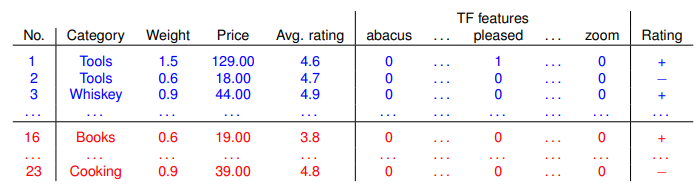
- Design/learn/configure recommender using the training data
- Compare true and predicted ratings on test cases:
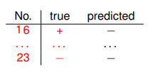
Quantify performance using e.g. \text{accuracy}:{\text{#correct predictions} \over \text{#all predictions}} (or root mean squared error RMSE for numeric predictions).
Implicit Feedback¶
- Split data into training and test set:
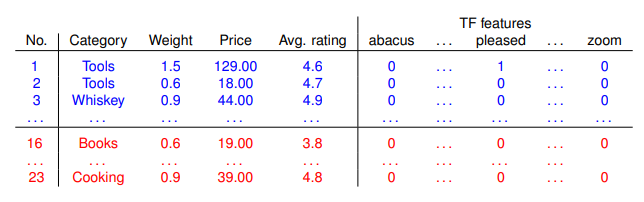
- Build/learn/configure recommender using the training data
- Determine positions of test items in ranked list of all items (or: test items plus random selection of some other items):
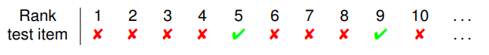
- Quantify performance
Mean reciprocal rank:
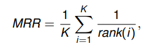
where K: number of test items; rank(i): the rank of the ith test item.
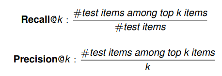
- All metrics make the implicit assumption that non-test items are not relevant for the user
- To go beyond the limitations of this implicit assumption: need user studies
Collaborative Filtering¶
Pure interaction data
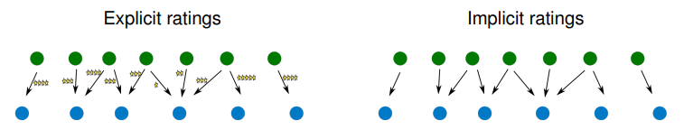
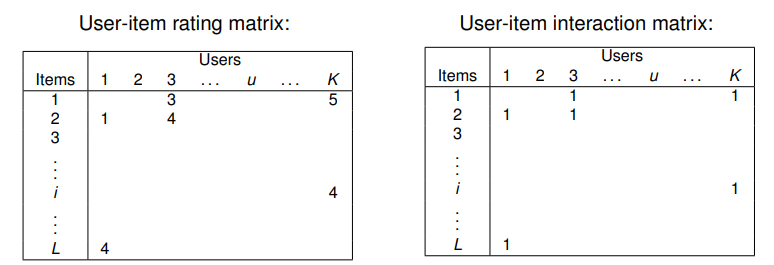
- Very sparse matrices
Some key techniques
- Neighborhood methods (this session)
- Random walk based (next session)
- Matrix factorization (next session)
Neighborhood Methods¶
Scenario
- No item features
- No user features
- Explicit feedback
Example
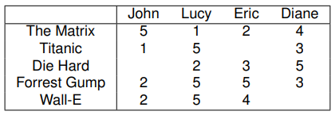
Here: explicit numeric feedback; could also be explicit categorical (+, −) feedback
User Based¶
To predict Eric's rating for Titanic:
- Find users similar to Eric who have rated Titanic
- Predict by taking average of similar users’ ratings
Item Based¶
To predict Eric's rating for Titanic:
- Find items that Eric has rated which are similar to Titanic
- Predict by taking average of Eric’s ratings for similar items
User vs Item Based¶
User- and item-based completely analogous: just transpose the matrix.
Differences due to rating distribution in matrix:
User cold start: for a user u with very few ratings (suppose exactly one rating):
- User-based
- Many equally (and highly similar) other users.
- Prediction for r_{u,i} for item i close to global average of ratings for i
- Item-based
- Only one candidate similar item.
- Prediction for r_{u,i} for item i equal to the only previous rating of u
Similarly for item cold start (everything transposed ...)
Normalization¶
Suppose
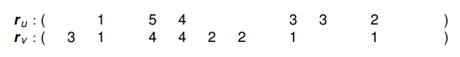
are user vectors.
Two different users may use somewhat different semantics for their ratings: user 1 gives 5 stars whenever he likes a movie, user 2 gives 5 stars only once in a lifetime.
Mean Centering¶
Let \overline r_u denote the mean value of all ratings of user u.
Define the user mean centered ratings as
Example:
- \overline r_u = 3, \quad \overline r_v = 2.25
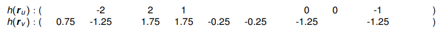
(note the 0s!)
Similarity¶
Problem: measure similarity between two partial integer vectors:
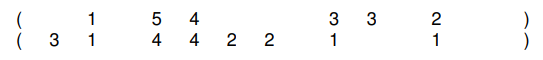
- these can be either a user (column) or item (row) vectors.
- in a sparse vector, the “blank” entries would be equal to 0.
Only consider the components that are present in both vectors:
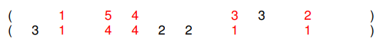
- (1, 5, 4, 3, 2) \quad (1, 4, 4, 1, 1)
Then what...
- Dot product?
- Cosine similarity?
User-User Similarity¶
- Center full user vectors
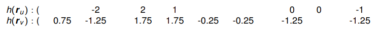
- Calculate similarity w_{u,v} as the cosine of the sub-vectors of commonly rated items:
(this is equivalent to Equation (2.19) in Rec. Sys. Handbook, Ch. 2)
Significance¶
Problem with w_{u,v}: may obtain large similarity values from very small sets of common ratings:
- \cos((1),(1)) = 1
- \cos((1, −1, 0, 2, 2, 0, −1, −2), (1, −1, 0, 1, 2, 0, −1, −2)) < 1
We can apply a penalty for 'short vectors':
- e.g. \gamma =25
Putting Things Together¶
User-based prediction of r_{u,i}:
- Let \mathcal N_i be the set of users that have rated i
- Predict
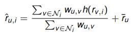
- Or use w'_{u,v}
- Instead of summing over all users in \mathcal N_i, may only sum over the k users that are most similar to u denoted \mathcal N_i(u)